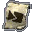
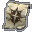

| 圖片 |
中文名稱 |
Name |
重量 |
材質 |
效果 |
|
鑑定卷軸 |
Scroll of Identity |
0.63 |
紙 |
鑑定目標物品，鑑定後的物品會顯示其詳細資料，如用途、重量、材料等 |
|
瞬間移動卷軸 |
Scroll of Teleportation |
0.63 |
紙 |
隨機瞬間移動到同一地區上的位置，若配合瞬間移動控制戒指使用，或者是使用祝福的瞬間移動卷軸，則可以從書籤中選擇想去的地方 |
|
傳送回家的卷軸 |
Scroll of Escape |
0.63 |
紙 |
傳送到最接近的村莊，如果是有城或有盟屋的血盟成員，則會傳送到自己的城或盟屋 |
|
解除詛咒的卷軸 |
Scroll of Curse Removal |
0.63 |
紙 |
解除中了詛咒的武器或防具
祝福的解除詛咒的卷軸更可以解除被詛咒的對盔甲施法的卷軸或對武器施法的卷軸 |
|
復活卷軸 |
Scroll of Resurrection |
0.63 |
紙 |
普通的：復活目標玩家或NPC，復活後目標的HP只有一半，部分NPC不能復活
祝福的：復活目標玩家或NPC，復活後目標的HP會全滿，部分NPC不能復活 |
 |
變身卷軸 |
Scroll of Polymorph |
0.63 |
紙 |
將自己變身做怪物外型，正義值滿時的時限為30分鐘，部分怪物不會主動攻擊變了怪獸的玩家 |
 |
對盔甲施法的卷軸 |
Scroll of Enchant Armor |
0.63 |
紙 |
普通（白）：使目標防具的防禦值額外加1
詛咒（紅）：使目標防具的防禦力減1
祝福（黃）：使目標防具的防禦力額外加1至3，防具的額外防禦力越低，+2/+3的機會越高 |
|
對武器施法的卷軸 |
Scroll of Enchant Weapon |
0.63 |
紙 |
普通（白）：使目標武器的攻擊力額外加1
詛咒（紅）：使目標武器的攻擊力減1
祝福（黃）：使目標武器的攻擊力額外加1至3，防具的額外防禦力越低，+2/+3的機會越高 |
|
毀滅盔甲的卷軸 |
Scroll of Destroy Armor |
0.63 |
紙 |
隨機毀滅身上已穿著的一件防具 |
|
全體傳送術的卷軸 |
Scroll of Mass Teleport |
0.63 |
紙 |
隨機將自己和身旁的盟友瞬間移動到同一地區上的位置，若配合瞬間移動控制戒指使用，可以從書籤中選擇想去的地方 |
|
指定傳送卷軸
(歌唱之島) |
Scroll of Escape to the Singing
Island |
0.63 |
紙 |
傳送往歌唱之島的村落中，只限在歌唱之島中使用 |
|
指定傳送卷軸
(隱藏之谷) |
Scroll of Escape to the Hidden
Valley |
0.63 |
紙 |
傳送往隱藏之谷的村落中，只限在隱藏之谷中使用 |
|
空的魔法卷軸(等級1) |
Blank Scroll (Level 1) |
0.63 |
紙 |
等級8或以上的法師，可以將一級的魔法抄寫在卷軸上，其他的角色就可以藉著卷軸施放該魔法 |
|
空的魔法卷軸(等級2) |
Blank Scroll (Level 2) |
0.63 |
紙 |
等級16或以上的法師，可以將二級或以下的魔法抄寫在卷軸上，其他的角色就可以藉著卷軸施放該魔法 |
|
空的魔法卷軸(等級3) |
Blank Scroll (Level 3) |
0.63 |
紙 |
等級24或以上的法師，可以將三級或以下的魔法抄寫在卷軸上，其他的角色就可以藉著卷軸施放該魔法 |
|
空的魔法卷軸(等級4) |
Blank Scroll (Level 4) |
0.63 |
紙 |
等級32或以上的法師，可以將四級或以下的魔法抄寫在卷軸上，其他的角色就可以藉著卷軸施放該魔法 |
|
空的魔法卷軸(等級5) |
Blank Scroll (Level 5) |
0.63 |
紙 |
等級40或以上的法師，可以將五級或以下的魔法抄寫在卷軸上，其他的角色就可以藉著卷軸施放該魔法 |
|
魔法卷軸(魔法名稱) |
Spell Scroll(Spell Name) |
0.63 |
紙 |
已經抄寫了魔法的卷軸，其他的角色就可以藉著卷軸施放該魔法 |
 |
古老的卷軸 |
Old Scroll |
0 |
紙 |
舊銀騎士任務提示道具 |
|
古代的卷軸 |
Ancient Scroll |
5 |
紙 |
解封古代裝備的卷軸 |
 |
傲慢之塔移動卷軸(11F) |
Teleport Scroll, 11F Tower of
Insolence |
0.63 |
紙 |
可在任何地點傳送往傲慢之塔第十一層 |
|
傲慢之塔移動卷軸(21F) |
Teleport Scroll, 21F Tower of
Insolence |
0.63 |
紙 |
可在任何地點傳送往傲慢之塔第二十一層 |
|
傲慢之塔移動卷軸(31F) |
Teleport Scroll, 31F Tower of
Insolence |
0.63 |
紙 |
可在任何地點傳送往傲慢之塔第三十一層 |
|
傲慢之塔移動卷軸(41F) |
Teleport Scroll, 41F Tower of
Insolence |
0.63 |
紙 |
可在任何地點傳送往傲慢之塔第四十一層 |
|
指定傳送卷軸
(村莊) |
Scroll of Escape to Village |
0.63 |
紙 |
尚未推出 |
|
指定傳送卷軸
(奇岩) |
Scroll of Escape to Giran |
0.63 |
紙 |
尚未推出 |